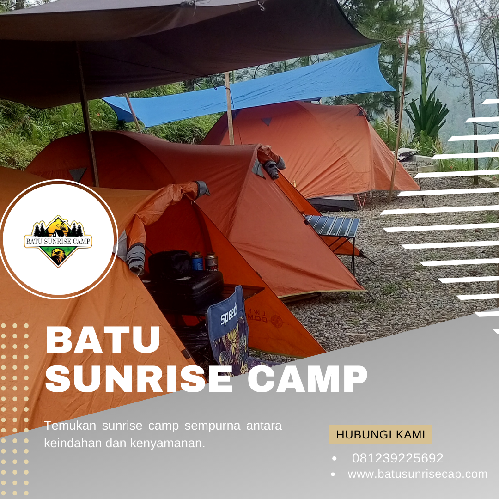

Camping bersama keluarga merupakan salah satu cara terbaik untuk mempererat hubungan antar anggota keluarga sekaligus memberikan pengalaman berharga bagi anak-anak. Di tengah era digital yang semakin menggerus waktu bersama keluarga, camping menjadi aktivitas yang efektif untuk menciptakan momen kebersamaan yang berkualitas. Batu Sunrise Camp hadir sebagai destinasi camping keluarga terbaik di kawasan Batu Malang yang menawarkan pengalaman camping yang aman, nyaman, dan penuh keseruan untuk semua anggota keluarga.
Dalam panduan lengkap ini, kami akan membahas semua hal yang perlu Anda ketahui untuk merencanakan camping keluarga yang sempurna di Batu Sunrise Camp. Mulai dari persiapan sebelum berangkat, aktivitas yang bisa dilakukan bersama anak-anak, hingga tips keamanan yang penting untuk diperhatikan oleh setiap keluarga.
Mengapa Camping Keluarga Itu Penting?
Camping keluarga bukan sekadar liburan biasa. Ada banyak manfaat yang bisa didapatkan dari aktivitas ini, baik untuk orang tua maupun anak-anak. Beberapa manfaat utama camping keluarga antara lain memperkuat bonding keluarga di alam terbuka tanpa gangguan gadget, mengajarkan anak-anak tentang kemandirian dan kerjasama tim, mengenalkan anak pada keindahan dan pentingnya menjaga alam, mengurangi stress dan meningkatkan kesehatan mental seluruh anggota keluarga, serta menciptakan kenangan indah yang akan diingat seumur hidup.
Penelitian menunjukkan bahwa anak-anak yang sering melakukan kegiatan outdoor memiliki perkembangan motorik, sosial, dan emosional yang lebih baik dibanding anak yang menghabiskan sebagian besar waktunya di dalam ruangan. Camping keluarga menjadi media yang tepat untuk memberikan stimulasi positif kepada anak-anak dalam lingkungan yang alami dan menyenangkan.
"Camping keluarga bukan tentang fasilitas mewah, tapi tentang kebersamaan sederhana yang menciptakan kenangan tak terhingga nilainya." — Tim Batu Sunrise Camp
Persiapan Camping Keluarga
Memilih Waktu yang Tepat
Untuk camping keluarga, terutama yang membawa anak-anak, pilihlah waktu saat cuaca cenderung cerah dan stabil. Musim kemarau (April-Oktober) adalah waktu yang ideal. Hindari camping saat musim hujan deras jika membawa anak yang masih kecil. Weekend atau long weekend biasanya menjadi pilihan favorit agar semua anggota keluarga bisa ikut tanpa mengganggu jadwal sekolah anak maupun pekerjaan orang tua.
Perlengkapan Khusus untuk Anak
Selain perlengkapan camping standar, ada beberapa item tambahan yang perlu disiapkan khusus untuk anak-anak. Bawa pakaian ekstra lebih banyak dari biasanya, karena anak-anak cenderung lebih cepat kotor saat bermain di alam. Siapkan juga obat-obatan anak, lotion anti nyamuk yang aman untuk anak, sunblock khusus anak, serta makanan dan camilan favorit mereka.
- Pakaian berlapis — Minimal 3 set pakaian ganti untuk mengantisipasi perubahan suhu dan basah
- Sleeping bag anak — Ukuran lebih kecil dan lebih hangat untuk anak
- Obat-obatan anak — Obat demam, pereda nyeri, P3K lengkap, dan obat rutin anak
- Mainan outdoor — Bola, layang-layang, atau permainan alam yang edukatif
- Senter anak — Headlamp kecil agar anak bisa menjelajah dengan aman di malam hari
- Alat tulis dan buku — Untuk membuat jurnal camping atau menggambar pemandangan
Baca Juga:
Tips Camping di Batu Malang agar Pengalaman Makin Berkesan Aktivitas Seru yang Bisa Dilakukan saat Camping di BatuPaket Keluarga Batu Sunrise Camp
Batu Sunrise Camp menyediakan Paket Keluarga yang dirancang khusus untuk memenuhi kebutuhan camping bersama keluarga. Paket ini sudah mencakup semua perlengkapan dan fasilitas yang diperlukan sehingga Anda tidak perlu repot membawa banyak barang bawaan.
Fasilitas dalam Paket Keluarga
Paket Keluarga Batu Sunrise Camp dibanderol mulai dari Rp350.000/orang dan sudah mencakup tenda keluarga berkapasitas 4-5 orang yang luas dan nyaman, area bermain anak yang aman dengan pengawasan, makan 3 kali sehari (makan malam, sarapan, makan siang) dengan menu yang disukai anak-anak, aktivitas edukasi alam yang dipandu oleh guide berpengalaman, api unggun marshmallow yang menjadi favorit anak-anak, serta P3K standby 24 jam untuk keamanan ekstra.
Yang membuat Paket Keluarga kami berbeda adalah perhatian khusus kami terhadap keamanan anak-anak. Area camping keluarga kami terpisah dari area camping umum, dilengkapi pagar pengaman di sisi-sisi yang berbahaya, dan memiliki petugas keamanan yang siaga sepanjang waktu. Kami memahami bahwa keamanan adalah prioritas utama dalam camping keluarga.

Area camping keluarga Batu Sunrise Camp — aman, nyaman, dan dilengkapi fasilitas lengkap untuk seluruh anggota keluarga.
Aktivitas Seru untuk Keluarga
Jelajah Alam Bersama
Ajak anak-anak menjelajahi alam sekitar camping ground. Identifikasi berbagai jenis tanaman, serangga, dan burung bersama-sama. Ini menjadi kesempatan edukasi yang menyenangkan bagi anak-anak untuk belajar langsung dari alam. Batu Sunrise Camp memiliki jalur jelajah alam yang aman dan tidak terlalu menantang, cocok untuk anak-anak segala usia.
Memasak Bersama
Libatkan anak-anak dalam proses memasak sederhana seperti membakar jagung, membuat sandwich, atau menyeduh coklat panas. Selain menambah keseruan camping, ini juga mengajarkan anak tentang kemandirian dan kerjasama dalam keluarga. Di Batu Sunrise Camp, kami menyediakan area memasak yang aman dan bersih untuk keluarga.
Menyaksikan Sunrise Bersama
Momen menyaksikan matahari terbit bersama keluarga dari ketinggian Batu Sunrise Camp adalah pengalaman yang sangat istimewa dan akan selalu dikenang. Bangunkan anak-anak sekitar 30 menit sebelum matahari terbit, siapkan selimut hangat, dan nikmati keajaiban alam bersama orang-orang tersayang. Anak-anak akan takjub melihat langit berubah warna dari gelap menjadi jingga keemasan.
Api Unggun dan Bercerita
Malam hari adalah waktu yang sempurna untuk menyalakan api unggun, memanggang marshmallow, dan bercerita bersama. Ajak anak-anak untuk berbagi cerita pengalaman mereka selama sehari camping, atau ceritakan kisah-kisah menarik tentang alam dan bintang di langit. Momen ini akan menjadi kenangan indah yang tersimpan dalam hati setiap anggota keluarga.

Kehangatan api unggun malam hari — momen terbaik untuk bercerita dan bersantai bersama seluruh anggota keluarga.
Tips Keamanan Camping dengan Anak
Keamanan anak adalah prioritas nomor satu dalam camping keluarga. Berikut beberapa tips keamanan yang harus diperhatikan oleh setiap orang tua.
- Selalu awasi anak — Jangan biarkan anak bermain sendiri tanpa pengawasan, terutama di area yang belum dikenal
- Ajarkan batas area — Tentukan batas area bermain yang aman dan jelaskan kepada anak
- Bawa P3K lengkap — Siapkan obat-obatan darurat termasuk obat luka, perban, antihistamin, dan obat demam anak
- Gunakan pelindung — Lotion anti nyamuk, sunblock, dan topi untuk melindungi anak dari sengatan matahari dan gigitan serangga
- Kenalkan cara darurat — Ajarkan anak apa yang harus dilakukan jika tersesat atau dalam keadaan darurat
- Jaga asupan cairan — Pastikan anak minum air yang cukup, terutama saat beraktivitas di bawah sinar matahari
Menu Makanan yang Disukai Anak
Menu makanan saat camping keluarga sebaiknya disesuaikan dengan selera anak-anak. Di Batu Sunrise Camp, Paket Keluarga kami menyediakan menu yang ramah anak dan tetap bergizi. Menu yang kami rekomendasikan untuk camping keluarga antara lain nasi goreng spesial untuk sarapan, ayam bakar madu untuk makan malam, sosis bakar dan jagung bakar sebagai camilan, coklat panas dan marshmallow untuk suasana api unggun, serta buah-buahan segar dan jus sebagai asupan vitamin tambahan.
Jika anak Anda memiliki alergi tertentu terhadap jenis makanan, silakan informasikan kepada tim kami saat reservasi agar kami bisa menyesuaikan menu. Kami selalu berupaya mengakomodasi kebutuhan khusus setiap tamu kami, termasuk dalam hal makanan.
FAQ — Pertanyaan yang Sering Diajukan
Kesimpulan
Camping keluarga di Batu Sunrise Camp adalah investasi kenangan yang tak ternilai harganya. Dengan fasilitas yang lengkap dan aman untuk anak, paket yang disesuaikan untuk keluarga, serta pemandangan alam yang memukau, camping di sini akan menjadi pengalaman yang selalu dirindukan oleh setiap anggota keluarga Anda. Jangan tunda lagi, rencanakan camping keluarga Anda sekarang!
Hubungi kami melalui WhatsApp di 081239225692 untuk reservasi Paket Keluarga dan dapatkan penawaran terbaik. Tim kami siap membantu merencanakan liburan camping keluarga yang sempurna untuk Anda dan orang-orang tercinta!